Understanding Retrieval Robustness for
Retrieval-Augmented Image Captioning
Abstract
Recent advances in retrieval-augmented models for image captioning highlight the benefit of retrieving related captions for efficient, lightweight models with strong domain-transfer capabilities. While these models demonstrate the success of retrieval augmentation, retrieval models are still far from perfect in practice: the retrieved information can sometimes mislead the model, resulting in incorrect generation and worse performance. In this paper, we analyze the robustness of a retrieval-augmented captioning model SmallCap. Our analysis shows that the model is sensitive to tokens that appear in the majority of the retrieved captions, and the input attribution shows that those tokens are likely copied into the generated output. Given these findings, we propose to train the model by sampling retrieved captions from more diverse sets. This decreases the chance that the model learns to copy majority tokens, and improves both in-domain and cross-domain performance.
1 Introduction
Recent retrieval-augmented image captioning models have shown success in strong image captioning performance while reducing model parameters by retrieving related captions for a given image (Ramos et al., 2023b; Sarto et al., 2022; Yang et al., 2023). These models use retrieved information as additional context besides the input image. However, similar to retrieval-augmented language models (Yoran et al., 2023), image captioning models enhanced with retrieval can sometimes be misled by irrelevant information. For example, in Figure 1 the captioning model is misled by the token “elephant” in the retrieved captions, and generates captions that do not match the given image.
For retrieval-augmented language models, Yoran et al. (2023) have studied the cases where retrieval misled the model prediction, and address this problem with a retrieval-robust LLM by continuous training with synthetic data for question answering tasks. However, in their approach, the retrieval system returns only one passage at each step. Considering that LLMs can be sensitive to the order of prompts Lu et al. (2022), the robustness of using multiple retrieved results has not been fully studied. Evaluating and improving the robustness of retrieval-augmented image captioning models remains under-explored, specifically when the model is augmented with multiple retrieved results.
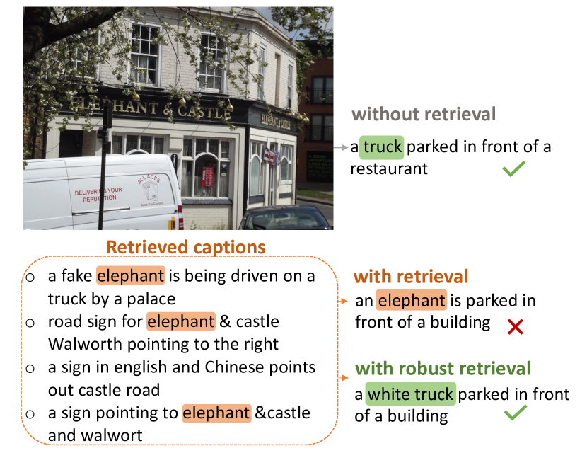
To bridge this gap in the literature, we study the robustness of the SmallCap retrieval-augmented captioning model (Ramos et al., 2023b). By the definition of retrieval robustness proposed in Yoran et al. (2023), retrieved context should boost model performance when relevant, and should not adversely affect it when irrelevant. We thoroughly examine the robustness of the model with regards to the order of the retrieved captions, and the relevance of the retrieved content. We also present a novel analysis of model behaviour based on majority voting, supported by input attribution and attention analyses to investigate how the retrieved tokens influence the model generation. And finally, inspired by Hoang et al. (2022), we propose to sample the retrieved captions from a larger list during training to prevent the model from overfitting to the top relevant captions. Our evaluation shows improved model robustness and better out-of-domain generalization.
The main findings of this paper are: 1) We study the robustness of an existing retrieval-augmented captioning model SmallCap and find it is not robust to processing randomly retrieved content. 2) We identify that tokens that frequently occur in the retrieved captions, i.e. majority tokens, have high attribution scores with regard to the tokens generated by the model. This phenomenon suggests heightened sensitivity and copying. 3) Training with sampled retrieved captions from a larger list instead of with fixed top-k relevant captions improves model robustness, yielding better generalization and out-of-domain performance.111We release the code at https://github.com/lyan62/RobustCap
2 Related Work
Robustness of retrieval-augmented models.
Retrieval-augmented generation (RAG) involves enhancing the generation process by incorporating retrieved information from an external datastore as additional context to the input Lewis et al. (2020). RAG models have shown to improve performance across a variety of NLP tasks Mialon et al. (2023). However, RAG models can overly rely on retrieved information, resulting in inaccurate generation when the retrieved context is flawed Yan et al. (2024); Yoran et al. (2023).
Recent efforts aim to enhance RAG model robustness against misguided or hallucinated generations. One approach involves filtering retrieved content (Wang et al., 2023; Yoran et al., 2023; Yasunaga et al., 2023; Yan et al., 2024; Asai et al., 2023) by applying or training an additional evaluator. Another direction focuses on improving robustness during the training of the generation model itself. Specifically, for retrieval-augmented question answering with large language models, Yoran et al. (2023) propose continued training with a synthetic dataset that contains both relevant and irrelevant context, while Cuconasu et al. (2024) suggests incorporating irrelevant documents. In retrieval-augmented translation, robustness is improved through shuffling retrieved translations (Hoang et al., 2022), ensemble model decoding (Hao et al., 2023), and controlled interactions between source and retrieved translations (Hoang et al., 2023).
Retrieval-augmented image captioning.
Image captioning is the task that describes the visual contents of an image in natural language Xu et al. (2015); Osman et al. (2023). Recent studies have integrated RAG into this field. Sarto et al. (2022) and Zhou and Long (2023) experimented with retrieving similar or style-aware images before generating captions. Li et al. (2023) introduced a lightweight image captioning model that utilizes retrieved concepts. More related to our work, Ramos et al. (2023a) developed end-to-end encoder-decoder models that attend to both the image and retrieved caption embeddings.
In particular, the SmallCap model (Ramos et al., 2023b), presenting retrieval augmentation in image captioning could reduce trainable parameters and adapt to out-of-domain settings. The model utilizes frozen unimodal models, incorporating a pre-trained encoder and decoder connected by trainable cross-attention layer.
However, it still remains unclear how retrieved captions influence the generation of captions in retrieval-augmented image captioning, especially concerning visual inputs. Additionally, the evaluation and enhancement of the robustness of these models are still under-explored.
3 Robustness of Retrieval-Augmented Image Captioning
To evaluate the robustness of the SmallCap retrieval-augmented caption model Ramos et al. (2023b), we conduct controlled experiments and observe its resilience to changes in (1) the order of the retrieved captions and (2) the content relevance of the retrieved captions.
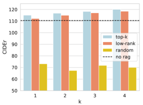
3.1 Robustness Evaluation
For a given image, SmallCap is augmented with a sequence of retrieved captions that are combined into an input for the language model decoder: “Similar images show . This image shows …”. The retrieved captions are obtained through image-to-text retrieval using CLIP embeddings (Radford et al., 2021), and are sorted according to their relevance, i.e., cosine similarity. From the sorted retrieved captions, we retain the most similar captions as the retrieval list. In this regard, the top- retrieved candidates are the first captions in the list, and the low-ranked captions are the last- captions in the list. SmallCap uses the top- retrieved captions in the prompt by default.
Context order.
When prompting the model to generate a caption for a given image, we can change the order of the retrieved captions by permuting or reversing them. We evaluate the effect of the order changes in two settings: one with a model trained using the top- retrieved captions (default), and another that is also trained with permuted or reversed retrieved captions.222For the model trained with default order—top four captions, we use the pretrained checkpoints from HuggingFace: https://huggingface.co/Yova/SmallCap7M, https://huggingface.co/Yova/SmallCapOPT7M
Content relevance.
To evaluate how robust the model is towards noise in the retrieved captions, we are curious to see how the model performs when (1) captions are randomly retrieved, i.e. likely to be irrelevant for the given image (2) only low-ranked retrieved captions are available. Here the randomly retrieved captions are those retrieved with another image. For low-ranked captions, we take the lowest-ranked captions from the retrieval list that consists of top seven relevant captions.
3.2 Experimental Setup
In the experiments, we set as it has been demonstrated as the optimal number of captions by Ramos et al. (2023b). We evaluate SmallCap models with both OPT-350M Zhang et al. (2022) and GPT-2 Radford et al. (2019) as the decoder models. For the image encoder, we use ResNet-50x64 He et al. (2016) and CLIP-ViT-B/32 Radford et al. (2021) as the retrieval encoder. We keep the same model setting in the following sections unless stated otherwise.
Data and metrics
We first evaluate the robustness of Smallcap on COCO validation set for in-domain evaluation. Then we evaluate on NoCaps (Agrawal et al., 2019), which contains In, Near and Out-of-domain data, and serves as a challenging dataset designed to assess the generalization capabilities of models trained on COCO. For both datasets we use the validation set experimenting with different number of retrieved captions, i.e. different values. We report peformance using CIDEr score (Vedantam et al., 2015).
| Retrieval Order | LM Backbone | |||
|---|---|---|---|---|
| Train | Eval | GPT-2 | OPT | |
| default | default | 116.4 | 120.3 | |
| permute | 116.2 | 120.1 | ||
| reverse | 115.8 | 119.7 | ||
| permute | permute | 117.2 | 120.4 | |
| reverse | reverse | 116.4 | 120.7 | |
3.3 Order Robust but Content Sensitive
Order robust.
From the results in Table 1 and Table 2, we observe that SmallCap is indeed robust to the order of the retrieved texts. Permuting the order of the captions during training and evaluation show CIDEr point improvement for COCO (Lin et al., 2014) and CIDEr score increase for NoCaps (Agrawal et al., 2019). This indicates that if multiple captions are used for augmentation, then permuting their order helps.
Content sensitive.
Figure 2 shows that when using randomly retrieved captions instead of the top- most relevant captions, performance drops drastically compared to the no-retrieval baseline.333Here the top and low ranked captions are obtained from a list of top-seven captions retrieved captions ordered by their cosine similarity to the image embedding. This implies that smallcap lacks resilience to noise in the retrieved captions, and the irrelevant context has the potential to mislead the model, resulting in inaccurate predictions. When prompting with low-ranked retrieved captions, while performance slightly decreases, the retrieval-augmented model still outperforms the one without retrieval.
| Retrieval Order | LM Backbone | ||||||
|---|---|---|---|---|---|---|---|
| GPT-2 | OPT | ||||||
| Train | Eval | In | Near | Out | In | Near | Out |
| default | default | 80.1 | 79.4 | 69.6 | 91.0 | 84.4 | 76.3 |
| permute | 81.6 | 79.8 | 68.5 | 92.5 | 84.5 | 75.8 | |
| reverse | 80.2 | 79.3 | 68.4 | 92.0 | 84.4 | 76.6 | |
| permute | permute | 81.5 | 79.7 | 69.8 | 94.2 | 84.0 | 79.4 |
| reverse | reverse | 80.4 | 80.1 | 68.4 | 92.5 | 85.6 | 75.9 |
4 Majority Tokens Explain Behavior
To better understand how each token of the retrieved content relates to the observed sensitivity discussed in the previous section, we hypothesize that the model is driven by the presence of majority tokens. In other words, when the model is prompted with retrieved captions, we assume that the predicted tokens are influenced by the tokens that appear in the majority of the retrieved captions. To test this assumption, we propose a majority voting analysis, followed by input attribution, and an attention analysis of the model behavior.
4.1 Majority Tokens
We first introduce the definition of majority tokens. Let represent a retrieved caption , which contains a sequence of tokens. For a given image, we assume that a total of retrieved captions are used in the model prompt: , , …, . For each token in the set of unique tokens from the retrieved captions, we define as a majority token (denoted as ) if appears in more than half of the retrieved captions444Note that we remove the stop words in the retrieved captions when determining the majority tokens. The stop words are filtered from the top-100 most frequent tokens in the COCO dataset, where we manually remove meaningful tokens such as “man”, “two” from the list. Please see the Appendix A for the complete list., i.e., where is the number of retrieved captions that contains token as in Equation 1:
| (1) |
For a generated caption in the evaluation data, we can calculate the majority-vote probability as the probability of the majority token appearing in the generated caption.
We expect that the higher the value of , the more likely it is that the model is generating captions based on the majority tokens.
4.2 Experimental Setup
We test our majority vote assumption with a controlled experiment. Specifically, we analyze the predictions of the model in two settings, each provided with retrieved captions to ensure the presence of a majority token:
- 2 Good 1 Bad (2G1B):
-
The retrieval set contains two relevant captions and one irrelevant caption;
- 2 Bad 1 Good (2B1G):
-
The retrieval set contains two irrelevant captions and one relevant caption.
The assumption is that, if there is a majority voting behavior with respect to the retrieved captions, the model will copy such majority tokens to the final output. The distinction will be clear in this setting — in the setup 2B1G, if the model is robust to the retrieved context, the model will focus more on the good caption instead of the majority tokens in the two bad captions.
We use the COCO evaluation set and the pretrained checkpoint with the OPT decoder of Ramos et al. (2023b) for this analysis. Good captions are obtained using the top-two and top-one retrieved captions, respectively, for a given image. Bad captions are obtained by retrieving one or two captions, respectively, from a randomly selected image.
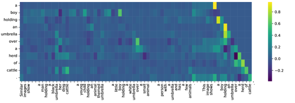
Results.
We find that the probability of majority vote in the 2G1B setting is 86.47%. This high probability suggests that the majority tokens in the good captions could be being used to guide the model generation. In the 2B1G setting, the model is much less likely to generate majority tokens from the bad captions, indicating some robustness in not always following them. However, 20.84% of the time, the model can still be misled by their appearance, resulting in the majority tokens being copied into the model output.
4.3 Input Attribution with Integrated Gradients
To better understand the role of majority tokens in model generation, we use integrated gradients (Sundararajan et al., 2017) for input attribution analysis. This enables us to examine the influence of each individual token in the retrieved captions on the model prediction.
Attribution visualization.
Figure 3 shows an example of an attribution visualization, where the attribution score of each input token (x-axis) is computed at each generation step (y-axis). Bright color cells correspond to high attribution to the input token. High attribution scores to the same tokens seen in the retrieved captions may indicate copying. Negative attribution scores are observed at contradicting tokens observed in the retrieved captions to the current generation. Negative scores are observed at token “her” when model is predicting the token “boy” and at token “small” when predicting “herd”. Additional input attribution visualizations can be found in Appendix B.1.
Quantitative analysis.
We also quantitatively analyze the impact of majority tokens by calculating pairwise attribution scores between tokens in retrieved captions and those predicted by the model. Higher attribution values suggest greater sensitivity to the input token Ancona et al. (2018). Figure 4 shows the distribution of the pairwise attribution scores for the 2B1G setup. It is clear that the model is sensitive to the majority tokens, especially when the generated token exists in the retrieved captions. Such behavior indicates weak robustness: we would not expect a robust model to be distracted by the tokens from the two irrelevant retrieved sentences at inference time. To better visualize the impact, we show distribution of original attribution values and the absolute values Ancona et al. (2018) across all evaluation samples.
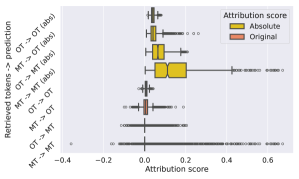
4.4 Attention and Model Behavior
Finally, we visualize the self-attention and cross-attention to locate the heads and layers in the SmallCap-OPT125M model that may contribute to the majority voting behaviour when generating a caption. This is crucial because all interactions between captions (self-attention) and images (cross-attention) take place in this stage.
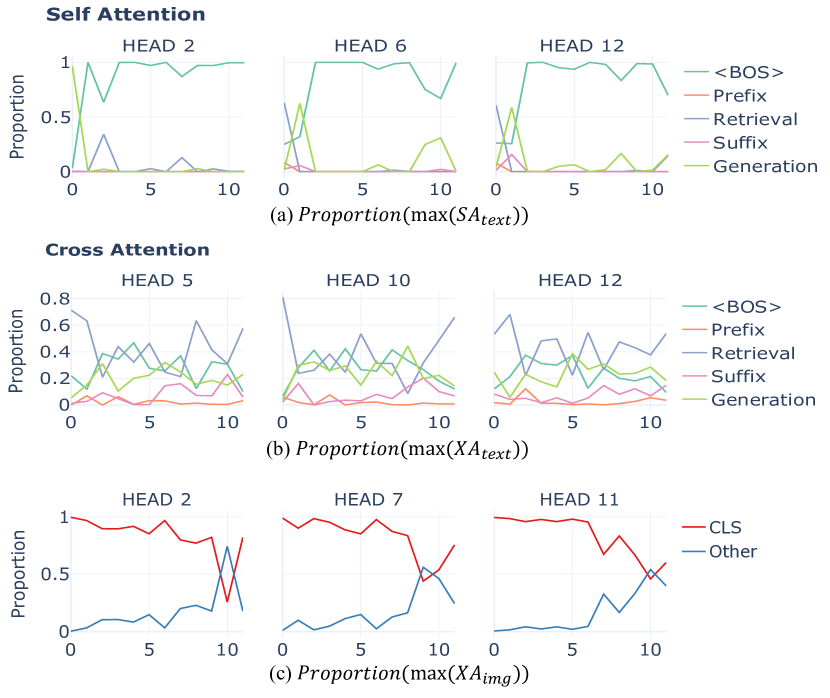
Distribution of max attention occurrence.
We partition the text input prompt into five distinct segments: begin of the sentence token (<BOS>), prompt tokens before retrieved captions (prefix), i.e. “Similar image shows”, the retrieved captions (retrieval) , prompt tokens before generation (suffix), i.e. “This image show”, and the generation itself. For image patches, we segment them into two pieces – the CLS output embedding, and the set of patch output embeddings.
Let denote the sets of indices, where for five segments. For the text input, each segment contains the indices of the tokens in each segment. To track the occurrence of max attention values in , we define the indicator function as follows:
| (2) |
where is the index of the input with the maximum attention score for sample .
For self-attention between the textual tokens, represents the attention score between the generated token and the text context token, denoted as .
For cross-attention between the decoder and the image representations, we report both a text-centric and an image-centric analysis. The text-centric analysis measures the attention between the image patch and the text token, to identify which segments of the text have the highest cross-attention scores in relation to the image. In the image-centric analysis , we measure the attention between the generated token and the image patch. We now redefine the notation to let represent the CLS output embedding, and represent the set of image patch embeddings, respectively. This allows to identify if the CLS patch embedding receives the highest cross-attention scores in relation to the generated tokens, or if it is the actual image patch embeddings.
For each analysis, , , and , we calculate the proportion of occurrences of the maximum score in by averaging through all generated tokens for a dataset.
Self-attention.
We gather attention scores between the generated tokens and context tokens, and categorize the distribution of the maximum scores into the five text segments (BOS, prefix, retrieval, suffix, and generation).
Figure 5(a) illustrates the changes in the distribution of maximum self-attention scores in each layer of the decoder language model. Notably, at the initial layers, a majority of attention heads exhibit heightened focus on retrieved captions or the current context for generation. However, after the second layer, we observe an increased emphasis on the beginning of sentence token (</s>). This behavior is consistent with prior research on the attention mechanism of GPT-2 Vig and Belinkov (2019). Figures LABEL:subfig:gpt2-self-attention and LABEL:subfig:opt-self-attention show the behaviour for all self-attention heads in for the GPT and OPT model variants, respectively.
Cross-attention.
Similar to the self-attention behaviour, we categorize the occurrence of the maximum cross-attention to the five text segments. As shown in Figure 5(b), in most attention heads, the cross-attention attains its maximum value between the image and the retrieved captions or between the image and the generated tokens. Figures LABEL:subfig:gpt2-cross-attention-text and LABEL:subfig:opt-cross-attention-text show the text-centric analysis for all cross-attention heads for the GPT and OPT backbones.
Finally, we inspect whether the model focuses on the CLS patch or actual image patches. In Figure 5(c), we observe that the model only pays maximum attention to the image patches in the final layers (the blue line). Figures LABEL:subfig:gpt2-cross-attention-cls and LABEL:subfig:opt-cross-attention-cls show the full results for the image-centric analysis.
Overall, these observations show that the model attends to both modalities during the caption generation process. However the lack of strong cross-attention to actual image patches suggests that the model is misled by text prompts, even when irrelevant information is absent in the provided image.
5 Improving Robustness to Retrieval via Sampling
In order to improve the robustness of the model to potentially noisy captions, we propose to randomly sample the captions from a larger retrieval list for a given image, instead of training with only the top- retrieved captions. In this manner, the model can learn from more diverse context that includes both top- and lower-ranked captions.
5.1 Experimental Setup
Inspired by Hoang et al. (2022), we experiment with two sampling methods during training to improve retrieval robustness.
Sample- training.
We sample captions randomly from the top-=7 retrieved captions during training555We sample from the top-=7 for alignment with the baseline; see the Appendix for an ablation on varying .. Following Ramos et al. (2023b), we train smallCap with the OPT-350M decoder on the COCO captioning dataset (Chen et al., 2015) for 10 epochs on a NVIDIA A100 40GB GPU with the default learning rate of 1e-4 and batch size of 64. We experiment with in the range of 1–4.
Controlled sample- training (c-sample-).
Aiming to train the model that better distinguishes irrelevant context, we design a controlled sampling process — selecting randomly from the larger list while keeping the top relevant caption of the image during training. We train the model with same hyperparameters and dataset as sample-.
5.2 Evaluation and Results
In addition to the COCO and NoCaps validation set, we evaluate the Out-domain performance of the model using VizWiz caption dataset (Gurari et al., 2020) and report CIDEr scores.
| COCO Eval | ||||
| Model | top- | last- | random | |
| top-k | 1 | 115.1 | 112.2 | 73.2 |
| sample-k | 1 | 116.0 | 115.0 | 98.9 |
| top-k | 2 | 116.8 | 115.0 | 67.4 |
| sample-k | 2 | 117.4 | 116.8 | 84.6 |
| top-k | 3 | 118.3 | 117.1 | 71.8 |
| sample-k | 3 | 118.5 | 117.3 | 77.6 |
| top-k | 4 | 120.1 | 117.1 | 70.1 |
| sample-k | 4 | 119.2 | 118.6 | 73.1 |
| c-sample-k | 4 | 119.3 | 118.9 | 72.6 |
Sample- training improves model robustness to random retrieved captions.
As shown in Table 3, incorporating sampled retrieved captions into training consistently enhances performance across various values. The improvement is particularly notable when captions are randomly retrieved, suggesting the model is now better able to ignore irrelevant context. If we compare across different values of , sampling mitigates the model’s sensitivity to the number of retrieved captions, outperforming top- training. For instance, it achieves comparable performance with a smaller value than in the case of top- training. Furthermore, the gap between using the top- vs. the last- retrieved captions is reduced with sample- training: the maximum gap is reduced from 3.0 to 1.0 CIDEr points, indicating increased model robustness, even with lower-ranked retrieved captions. Figure 6 and 12 show qualitative examples of the improved robustness to randomly retrieved examples.
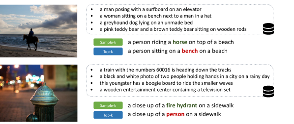
| VizWiz | NoCaps | NoCaps (+Web) | ||||||
| Model | In | Near | Out | In | Near | Out | ||
| top-k | 1 | 31.3 | 85.0 | 74.3 | 62.3 | 84.1 | 80.7 | 81.5 |
| sample-k | 1 | 32.3 | 87.0 | 75.7 | 63.6 | 87.8 | 81.2 | 77.5 |
| top-k | 2 | 33.7 | 85.0 | 74.3 | 62.3 | 90.5 | 86.2 | 89.5 |
| sample-k | 2 | 34.0 | 87.8 | 77.4 | 67.6 | 90.6 | 85.3 | 86.7 |
| top-k | 3 | 35.0 | 87.4 | 79.6 | 68.3 | 91.7 | 88.3 | 89.9 |
| sample-k | 3 | 35.4 | 88.7 | 80.3 | 69.4 | 92.6 | 88.0 | 90.0 |
| top-k | 4 | 35.5 | 87.4 | 79.6 | 68.3 | 94.2 | 89.4 | 91.2 |
| sample-k | 4 | 35.7 | 89.7 | 80.9 | 71.1 | 94.8 | 89.5 | 93.1 |
| c-sample-k | 4 | 36.0 | 90.1 | 81.3 | 71.5 | 94.5 | 90.0 | 93.3 |
Sampling improves cross-domain evaluation.
We also evaluate on VizWiz and NoCaps to measure cross-domain performance (Table 4). This is a more realistic setting where retrieved captions are out-of-domain and could be more noisy and less relevant. The application of sampling improves across all values of for Vizwiz. On the NoCaps dataset, with the COCO datastore, sampling consistently improves near and out-domain performance, suggesting increased robustness to noisy retrieval context. This is consistent with the benefits of sampled training demonstrated in cross-domain machine translation by Hoang et al. (2022). If we use a larger datastore that incorporates internet-derived captions (+Web), this consistently improves in-domain performance. Retrieval constraints are alleviated for near and out-domain samples with the larger datastore, where we see smaller gains with sample-. See qualitative examples in Figure 11 in Appendix C.
Controlled sampling further improves cross-domain evaluation.
Finally, on top of our best performing sample- model, controlled sample- further improves performance for both NoCaps and VizWiz. This suggests that incorporating both top-relevant and low-ranked captions during training aids the model in distinguishing irrelevant context.
6 Discussion
Majority tokens are reliable hints during training.
To better understand why the model relies on majority tokens during generation, we calculate the probability that majority tokens in the retrieved captions overlap with the ground truth captions (), and with the predicted tokens (). Table 5 shows that in 88%–99% of the training examples, the majority tokens in the retrieved captions are also present in the ground truth captions. This suggests that the model can develop a bias towards majority tokens due to the fact that they are so often present in the ground truth during training. This analysis also clarifies the decrease in the model’s robustness as increases when randomly retrieving captions. This is because a higher only adds noise without providing useful majority tokens. The use of sampling during training exposes the model to more diverse context, which leads to a slightly increased level of selectivity.
| k=2 | 3 | 4 | |
|---|---|---|---|
| 88.0 | 97.5 | 99.2 | |
| 74.7 | 86.5 | 91.0 | |
| 82.8 | 93.4 | 96.7 | |
| 81.9 | 93.3 | 96.6 |
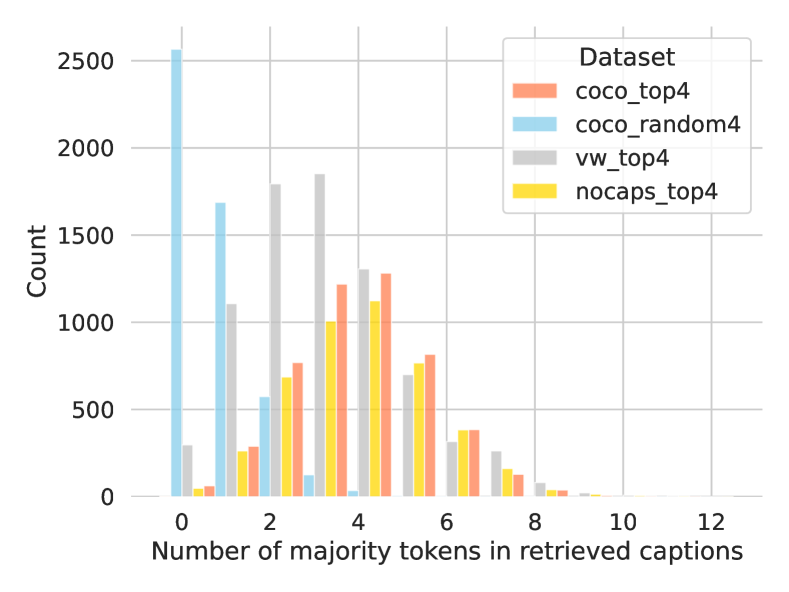
In Figure 7, we show the variation in the distribution of majority tokens across various evaluation datasets. When captions are randomly selected for the COCO evaluation data, there are fewer majority tokens in the retrieved captions. This presents a challenge for the model in making use of the retrieved captions, which accounts for the performance decrease shown in Figure 1. For evaluation, with the same value of , the fewer the number of majority tokens in the retrieved captions, the harder it is for the model to “copy” those tokens to the final output. In such scenarios, we obtain bigger improvements with the sample- training.
7 Conclusion and Future Work
We studied the robustness of the state-of-the-art retrieval-augmented image captioning model SmallCap and provide an through analysis and explanation of how retrieved captions effect the final prediction. Our exploration shows that SmallCap is robust to the order of the retrieved captions, but it is sensitive to retrieval noise, which has implications for using retrieval-augmented models in new domains. With extensive input attribution analysis, we show that such sensitivity is due to majority tokens in the retrieved captions. We demonstrate a more retrieval robust model can be trained with sampling methods during training. We expect that our analysis can inspire better retrieval-robust captioning models in the field.
In the future, we will investigate whether the majority voting behaviour is exploited in other retrieval-augmented captioning models. We hope to further explore if other techniques such as token-dropping or prefix-tuning would further improve retrieval robustness.
Ethics Statement
We acknowledge the potential risks of hallucination and biases introduced by retrieval augmentation in captioning models. Misleading tokens from the retrieved captions could cause the model to generate captions describing nonexistent entities or objects in images (Liu et al., 2024; Rohrbach et al., 2018). This could have adverse effects, such as propagating systematic biases present in the datastore used for retrieval (Foulds et al., 2024).
Despite the exploration in our work, we acknowledge that no system is perfect, and undesirable biases may still be present with our methods. We emphasize the need for continued research into techniques for identifying and mitigating hallucination and bias in retrieval-augmented models (Foulds et al., 2024; Deng et al., 2024). We also stress the importance of responsible deployment, with human oversight and content moderation pipelines.
As researchers, we have an ethical obligation to be transparent about the potential risks and limitations of our work. We welcome further scrutiny and discussion around these critical issues within the research community.
Limitations
We evaluate the robustness of a single retrieval-augmented image captioning model in this study. Given variations in training process and model structures, the observed model behavior may be specific to our chosen model. Applying the same analysis to other models would be useful for a deeper understanding regarding explainability and interpretation of retrieval augmented image captioning models, which we leave for future work.
For all experiments in our study, we employ the same CLIP-ViT-B/32 backbone as the image encoder. Investigating how model robustness varies with different visual encoders would enhance the scope of our study.
While training with sampling improves model robustness, it is intuitive that introducing more noise during training makes the task more challenging. In all our experiments, we train the model for same number of epochs as SmallCap, therefore it is not clear if the model would gain more robustness if trained longer. We are curious if there exists an optimal balance between training time and the level of noise exposure for achieving model robustness.
Acknowledgments
We thank Lei Li and the CoAStal and LAMP groups for feedback. Wenyan Li is supported by the Lundbeck Foundation (BrainDrugs grant: R279-2018-1145) and a research grant (VIL53122) from VILLUM FONDEN. Jiaang Li is supported by Carlsberg Research Foundation (grant: CF221432). Rita Ramos is supported by the Portuguese Recovery and Resilience Plan through project C645008882-00000055 (i.e., the Center For Responsible AI), and also by Fundação para a Ciência e Tecnologia (FCT), through the project with reference UIDB/50021/2020 (DOI:10.54499/UIDB/50021/2020) and the Ph.D. scholarship with reference 2020.06106.BD.
References
- Agrawal et al. (2019) Harsh Agrawal, Karan Desai, Yufei Wang, Xinlei Chen, Rishabh Jain, Mark Johnson, Dhruv Batra, Devi Parikh, Stefan Lee, and Peter Anderson. 2019. nocaps: novel object captioning at scale. In Proceedings of the IEEE International Conference on Computer Vision.
- Ancona et al. (2018) Marco Ancona, Enea Ceolini, Cengiz Öztireli, and Markus Gross. 2018. Towards better understanding of gradient-based attribution methods for deep neural networks. In International Conference on Learning Representations.
- Asai et al. (2023) Akari Asai, Zeqiu Wu, Yizhong Wang, Avirup Sil, and Hannaneh Hajishirzi. 2023. Self-rag: Learning to retrieve, generate, and critique through self-reflection. arXiv preprint arXiv:2310.11511.
- Chen et al. (2015) Xinlei Chen, Hao Fang, Tsung-Yi Lin, Ramakrishna Vedantam, Saurabh Gupta, Piotr Dollár, and C Lawrence Zitnick. 2015. Microsoft coco captions: Data collection and evaluation server. arXiv preprint arXiv:1504.00325.
- Cuconasu et al. (2024) Florin Cuconasu, Giovanni Trappolini, Federico Siciliano, Simone Filice, Cesare Campagnano, Yoelle Maarek, Nicola Tonellotto, and Fabrizio Silvestri. 2024. The power of noise: Redefining retrieval for rag systems.
- Deng et al. (2024) Ailin Deng, Zhirui Chen, and Bryan Hooi. 2024. Seeing is believing: Mitigating hallucination in large vision-language models via clip-guided decoding. arXiv preprint arXiv:2402.15300.
- Foulds et al. (2024) Philip Feldman Foulds, R James, and Shimei Pan. 2024. Ragged edges: The double-edged sword of retrieval-augmented chatbots. arXiv preprint arXiv:2403.01193.
- Gurari et al. (2020) Danna Gurari, Yinan Zhao, Meng Zhang, and Nilavra Bhattacharya. 2020. Captioning images taken by people who are blind.
- Hao et al. (2023) Hongkun Hao, Guoping Huang, Lemao Liu, Zhirui Zhang, Shuming Shi, and Rui Wang. 2023. Rethinking translation memory augmented neural machine translation. In Findings of the Association for Computational Linguistics: ACL 2023.
- He et al. (2016) Kaiming He, Xiangyu Zhang, Shaoqing Ren, and Jian Sun. 2016. Deep residual learning for image recognition. Proceedings of the IEEE conference on computer vision and pattern recognition.
- Hoang et al. (2022) Cuong Hoang, Devendra Sachan, Prashant Mathur, Brian Thompson, and Marcello Federico. 2022. Improving robustness of retrieval augmented translation via shuffling of suggestions.
- Hoang et al. (2023) Cuong Hoang, Devendra Sachan, Prashant Mathur, Brian Thompson, and Marcello Federico. 2023. Improving retrieval augmented neural machine translation by controlling source and fuzzy-match interactions. In Findings of the Association for Computational Linguistics: EACL 2023.
- Lewis et al. (2020) Patrick Lewis, Ethan Perez, Aleksandra Piktus, Fabio Petroni, Vladimir Karpukhin, Naman Goyal, Heinrich Küttler, Mike Lewis, Wen-tau Yih, Tim Rocktäschel, Sebastian Riedel, and Douwe Kiela. 2020. Retrieval-augmented generation for knowledge-intensive NLP tasks. In Advances in Neural Information Processing Systems, volume 33, pages 9459–9474.
- Li et al. (2023) Jiaxuan Li, Duc Minh Vo, Akihiro Sugimoto, and Hideki Nakayama. 2023. Evcap: Retrieval-augmented image captioning with external visual-name memory for open-world comprehension. arXiv preprint arXiv:2311.15879.
- Lin et al. (2014) Tsung-Yi Lin, Michael Maire, Serge Belongie, James Hays, Pietro Perona, Deva Ramanan, Piotr Dollár, and C Lawrence Zitnick. 2014. Microsoft coco: Common objects in context. In Computer Vision–ECCV 2014: 13th European Conference, Zurich, Switzerland, September 6-12, 2014, Proceedings, Part V 13. Springer.
- Liu et al. (2024) Hanchao Liu, Wenyuan Xue, Yifei Chen, Dapeng Chen, Xiutian Zhao, Ke Wang, Liping Hou, Rongjun Li, and Wei Peng. 2024. A survey on hallucination in large vision-language models. arXiv preprint arXiv:2402.00253.
- Lu et al. (2022) Yao Lu, Max Bartolo, Alastair Moore, Sebastian Riedel, and Pontus Stenetorp. 2022. Fantastically ordered prompts and where to find them: Overcoming few-shot prompt order sensitivity. In Proceedings of the 60th Annual Meeting of the Association for Computational Linguistics (Volume 1: Long Papers).
- Mialon et al. (2023) Grégoire Mialon, Roberto Dessì, Maria Lomeli, Christoforos Nalmpantis, Ram Pasunuru, Roberta Raileanu, Baptiste Rozière, Timo Schick, Jane Dwivedi-Yu, Asli Celikyilmaz, et al. 2023. Augmented language models: a survey. arXiv preprint arXiv:2302.07842.
- Osman et al. (2023) Asmaa AE Osman, Mohamed A Wahby Shalaby, Mona M Soliman, and Khaled M Elsayed. 2023. A survey on attention-based models for image captioning. International Journal of Advanced Computer Science and Applications, 14(2).
- Radford et al. (2021) Alec Radford, Jong Wook Kim, Chris Hallacy, Aditya Ramesh, Gabriel Goh, Sandhini Agarwal, Girish Sastry, Amanda Askell, Pamela Mishkin, Jack Clark, Gretchen Krueger, and Ilya Sutskever. 2021. Learning transferable visual models from natural language supervision. In Proceedings of the 38th International Conference on Machine Learning, Proceedings of Machine Learning Research.
- Radford et al. (2019) Alec Radford, Jeff Wu, Rewon Child, David Luan, Dario Amodei, and Ilya Sutskever. 2019. Language models are unsupervised multitask learners.
- Ramos et al. (2023a) Rita Ramos, Desmond Elliott, and Bruno Martins. 2023a. Retrieval-augmented image captioning. In Proceedings of the 17th Conference of the European Chapter of the Association for Computational Linguistics, pages 3666–3681, Dubrovnik, Croatia. Association for Computational Linguistics.
- Ramos et al. (2023b) Rita Ramos, Bruno Martins, Desmond Elliott, and Yova Kementchedjhieva. 2023b. Smallcap: lightweight image captioning prompted with retrieval augmentation. In Proceedings of the IEEE/CVF Conference on Computer Vision and Pattern Recognition, pages 2840–2849.
- Rohrbach et al. (2018) Anna Rohrbach, Lisa Anne Hendricks, Kaylee Burns, Trevor Darrell, and Kate Saenko. 2018. Object hallucination in image captioning. In Proceedings of the 2018 Conference on Empirical Methods in Natural Language Processing. Association for Computational Linguistics.
- Sarto et al. (2022) Sara Sarto, Marcella Cornia, Lorenzo Baraldi, and Rita Cucchiara. 2022. Retrieval-augmented transformer for image captioning. In Proceedings of the 19th International Conference on Content-Based Multimedia Indexing, CBMI ’22.
- Sundararajan et al. (2017) Mukund Sundararajan, Ankur Taly, and Qiqi Yan. 2017. Axiomatic attribution for deep networks. In Proceedings of the 34th International Conference on Machine Learning - Volume 70, ICML’17.
- Vedantam et al. (2015) Ramakrishna Vedantam, C. Lawrence Zitnick, and Devi Parikh. 2015. Cider: Consensus-based image description evaluation. In CVPR.
- Vig and Belinkov (2019) Jesse Vig and Yonatan Belinkov. 2019. Analyzing the structure of attention in a transformer language model. In Proceedings of the 2019 ACL Workshop BlackboxNLP: Analyzing and Interpreting Neural Networks for NLP, pages 63–76, Florence, Italy. Association for Computational Linguistics.
- Wang et al. (2023) Zhiruo Wang, Jun Araki, Zhengbao Jiang, Md Rizwan Parvez, and Graham Neubig. 2023. Learning to filter context for retrieval-augmented generation.
- Xu et al. (2015) Kelvin Xu, Jimmy Ba, Ryan Kiros, Kyunghyun Cho, Aaron Courville, Ruslan Salakhudinov, Rich Zemel, and Yoshua Bengio. 2015. Show, attend and tell: Neural image caption generation with visual attention. In International conference on machine learning, pages 2048–2057. PMLR.
- Yan et al. (2024) Shi-Qi Yan, Jia-Chen Gu, Yun Zhu, and Zhen-Hua Ling. 2024. Corrective retrieval augmented generation. arXiv preprint arXiv:2401.15884.
- Yang et al. (2023) Zhuolin Yang, Wei Ping, Zihan Liu, Vijay Korthikanti, Weili Nie, De-An Huang, Linxi Fan, Zhiding Yu, Shiyi Lan, Bo Li, et al. 2023. Re-vilm: Retrieval-augmented visual language model for zero and few-shot image captioning. arXiv preprint arXiv:2302.04858.
- Yasunaga et al. (2023) Michihiro Yasunaga, Armen Aghajanyan, Weijia Shi, Rich James, Jure Leskovec, Percy Liang, Mike Lewis, Luke Zettlemoyer, and Wen-tau Yih. 2023. Retrieval-augmented multimodal language modeling. In Proceedings of the 40th International Conference on Machine Learning, ICML’23.
- Yoran et al. (2023) Ori Yoran, Tomer Wolfson, Ori Ram, and Jonathan Berant. 2023. Making retrieval-augmented language models robust to irrelevant context. arXiv preprint arXiv:2310.01558.
- Zhang et al. (2022) Susan Zhang, Stephen Roller, Naman Goyal, Mikel Artetxe, Moya Chen, Shuohui Chen, Christopher Dewan, Mona Diab, Xian Li, Xi Victoria Lin, Todor Mihaylov, Myle Ott, Sam Shleifer, Kurt Shuster, Daniel Simig, Punit Singh Koura, Anjali Sridhar, Tianlu Wang, and Luke Zettlemoyer. 2022. Opt: Open pre-trained transformer language models.
- Zhou and Long (2023) Yucheng Zhou and Guodong Long. 2023. Style-aware contrastive learning for multi-style image captioning. In Findings of the Association for Computational Linguistics: EACL 2023.
Appendix A Majority Tokens
A.1 Stop words list
In this section, we present the stop words that were filtered from the COCO dataset in the experiments described in Section 4.2:
[’out’, ’some’, ’of’, ’is’, ’while’, ’are’, ’with’, ’down’, ’has’, ’over’, ’the’, ’next’, ’up’, ’near’, ’several’, ’other’, ’at’, ’top’, ’from’, ’in’, ’on’, ’a’, ’there’, ’an’, ’to’, ’and’, ’her’, ’front’, ’by’, ’for’, ’his’, ’it’]
Appendix B More Visualization
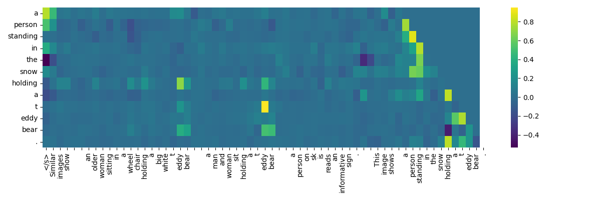
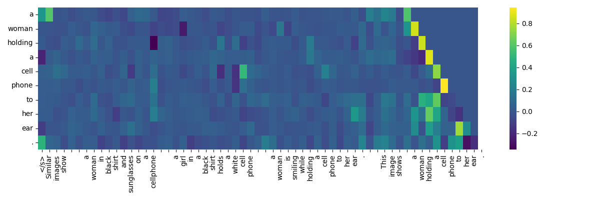
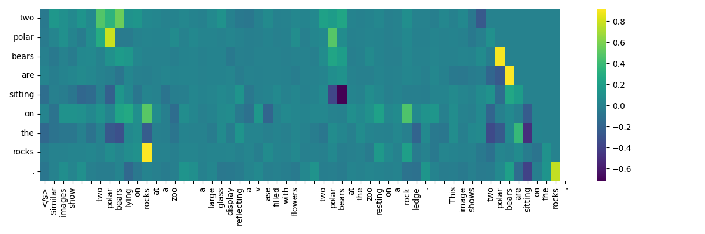
B.1 Input Attribution with Integrated Gradients
B.2 Attention
In Figure 9 and Figure 10, we depict the distributions of both self-attention and cross-attention scores across various heads and layers for SmallCap with GPT-2 and OPT decoder variants.
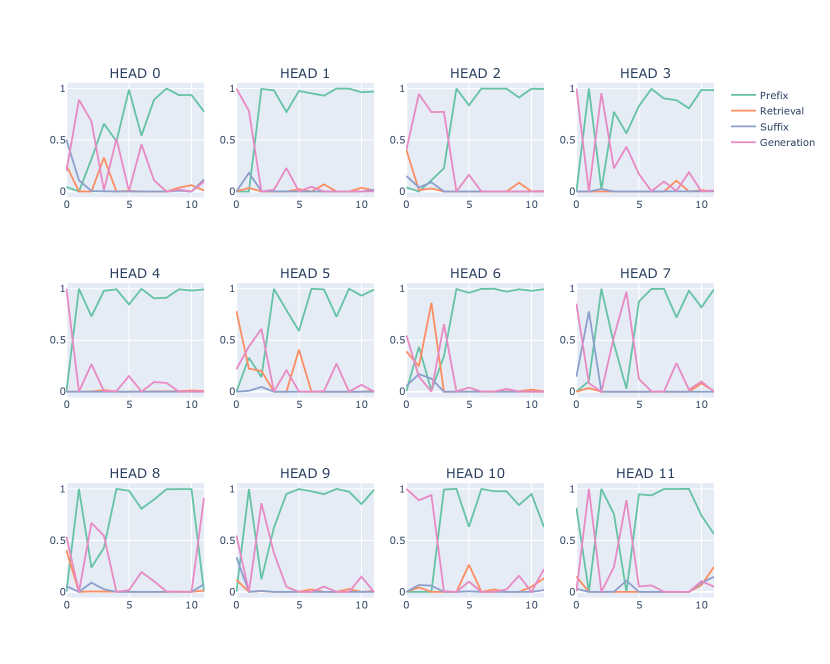
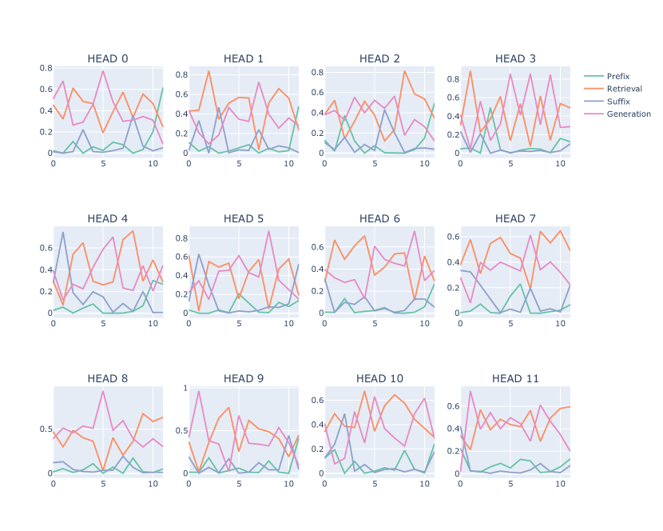
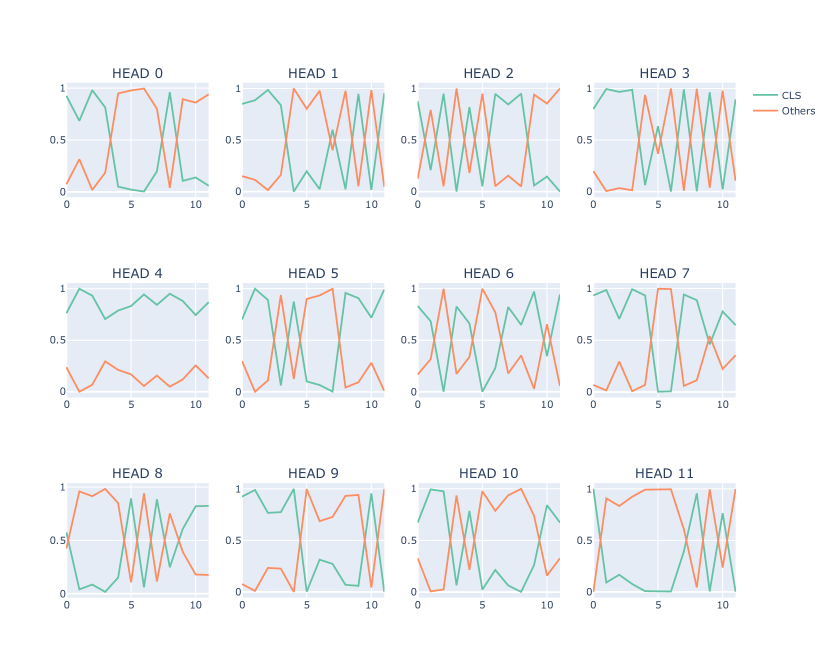
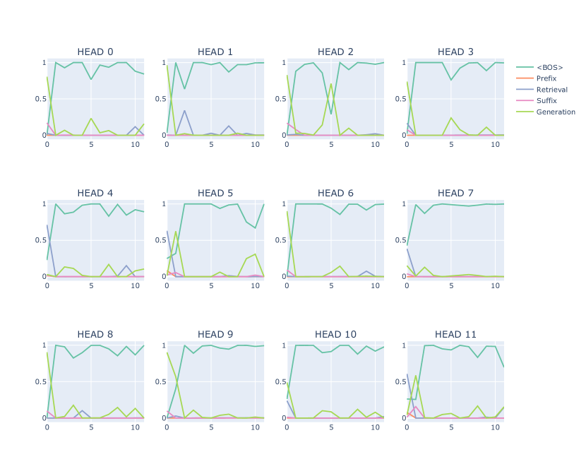
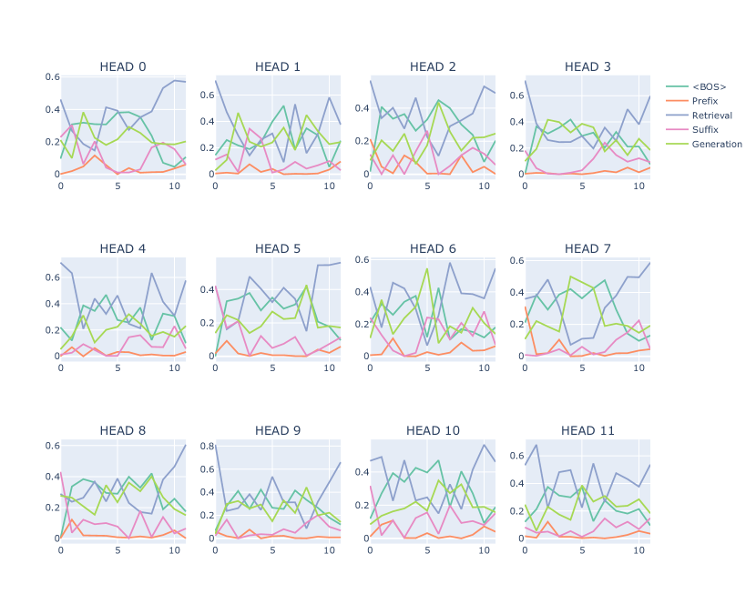
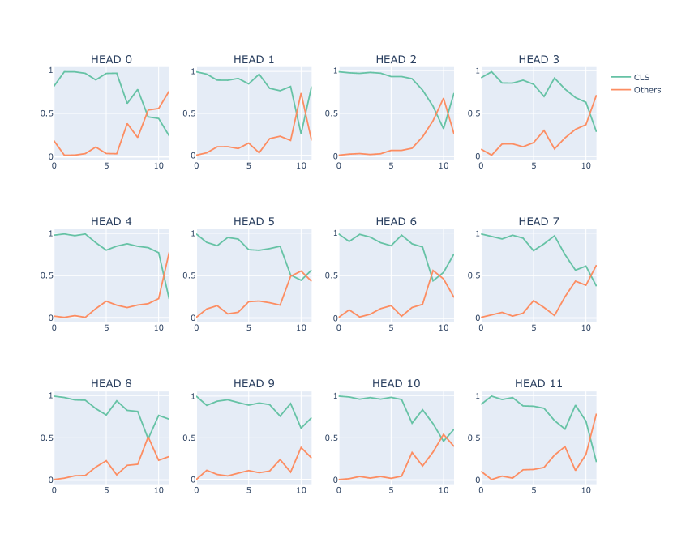
Appendix C Qualitative examples
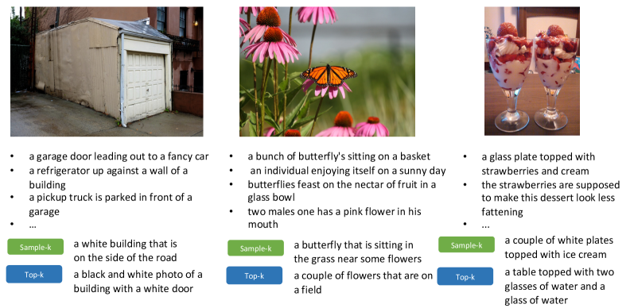
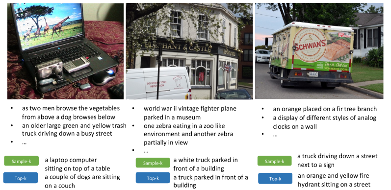
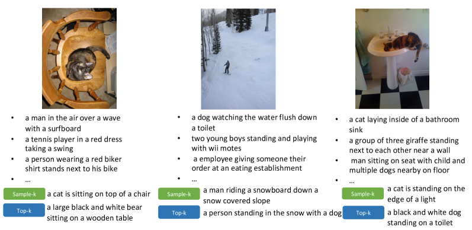
Appendix D More results
Order robustness evaluation
In Table 6 and Table 7, we provide both CIDEr and BLEU4 scores for order robustness evaluation (Section 3).
| Retrieval Order | SmallCap LM | ||
|---|---|---|---|
| Training | Evaluation | GPT-2 | OPT |
| default | default | 116.4/36.1 | 120.3/37.1 |
| permute | 116.2/36.0 | 120.1/37.0 | |
| reverse | 115.8/36.0 | 119.7/36.8 | |
| permute | permute | 117.2/36.4 | 120.4/37.2 |
| reverse | reverse | 116.4/36.1 | 120.7/37.0 |
| Model | Retrieval Order | In | Near | Out |
|---|---|---|---|---|
| GPT2 | default | 80.1/37.9 | 79.4/35.9 | 69.6/25.3 |
| permute | 81.5/38.8 | 79.7/36.6 | 69.8/26.2 | |
| reverse | 80.4/38.4 | 80.1/36.3 | 68.4/25.1 | |
| OPT | default | 91.0/27.1 | 84.4/23.8 | 76.3/15.0 |
| permute | 94.2/28.6 | 84.0/25.0 | 79.4/15.8 | |
| reverse | 92.5/28.4 | 85.6/25.3 | 75.9/14.2 |
Number of retrieved captions for sample- training
We experiment with different size of the retrieval candidate list from which we randomly select captions for sample- training (Table 8).
| COCO | ||||||
|---|---|---|---|---|---|---|
| Size | VizWiz | top- | last- | random | ||
| 7 | 4 | 36.0 | 119.2 | 117.1 | 71.0 | |
| 10 | 4 | 36.0 | 119.3 | 118.3 | 67.6 | |
| 50 | 4 | 33.9 | 118.1 | 117.7 | 81.2 | |
Percentage of tokens that are likely to be copied
In Table 9 we show the percentage of tokens that are likely to be copied from retrieved captions averaging through all samples in the validation set. Majority tokens takes more than half of the copied tokens.
| k=1 | 2 | 3 | 4 | |
|---|---|---|---|---|
| 49.1 | 63.3 | 69.8 | 75.7 | |
| 46.0 | 61.5 | 69.5 | 74.0 | |
| - | 33.1 | 45.7 | 54.5 | |
| - | 32.5 | 45.3 | 53.3 |
Comparison with other methods
Inspired by Yoran et al. (2023), we have considered intentionally including less relevant captions by including one irrelevant caption, one low-ranked caption, and top-2 relevant captions instead of using top-4 retrieved captions. However, in our preliminary experiments, this strategy does not perform as well as the sampling approach, likely due to the high noise level it introduced.
| COCO Evaluation | NoCaps Evaluation | |||||
|---|---|---|---|---|---|---|
| Method | top-k | last-k | random | In | Near | Out |
| top-4 | 120.1 | 117.1 | 70.1 | 87.4 | 79.6 | 68.3 |
| sample-4 | 119.2 | 118.6 | 73.1 | 89.7 | 80.9 | 71.1 |
| mixed-4 | 119.2 | 118.1 | 66.7 | 59.9 | 57.9 | 39.4 |